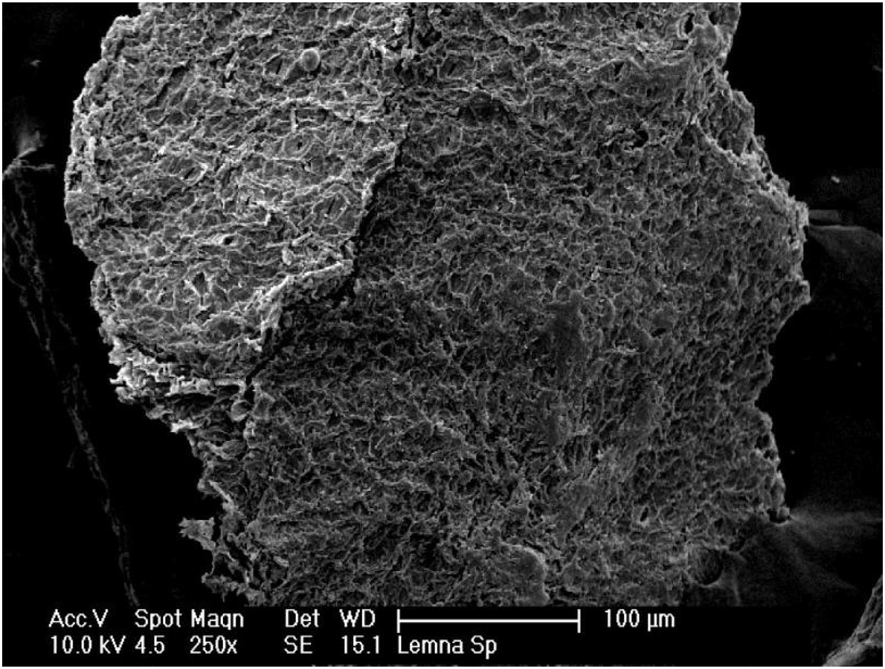

Adsorption des Radionucléides
Résumé du projet : Ce projet porte sur l’élimination de l’uranium, du césium, du radium et de l’américium à partir de solutions aqueuses à l’aide de divers matériaux adsorbants, notamment de la poudre d’os, de l’hydroxyapatite, un composite chitosane-zéolithe, des macrophytes aquatiques et des biochars standards. Les études ont inclus l’analyse des isothermes, des cinétiques, du point de charge zéro et des effets des variables de procédé.
Principales contributions :
- Étude du comportement d’adsorption des radionucléides en expériences discontinues
- Évaluation d’adsorbants standards et modifiés (naturels et synthétiques)
- Utilisation de plans d’expériences pour évaluer les paramètres opérationnels clés
- Caractérisation des matériaux par SEM, BET, FTIR et pHpzc
Techniques utilisées : Isothermes d’adsorption (Langmuir/Freundlich), cinétiques (pseudo-premier/deuxième ordre), surface spécifique, détermination du pHpzc, spectrométrie gamma, SEM/EDS.
Publications :
- An adsorption agent based on chitosan–zeolite composite: environmental and radioactive liquid waste remediation
- Biosorption of uranium from aqueous solutions by Azolla sp. and Limnobium laevigatum
- Use of calcium alginate beads and Saccharomyces cerevisiae for biosorption of 241Am
- The use of rice and coffee husks for biosorption of U (total), 241Am, and 137Cs in radioactive liquid organic waste
- Uranium biosorption by Lemna sp. and Pistia stratiotes

Figure 1 : Diagrammes de Pareto et de contours issus du plan d’expériences pour le composite chitosane–zéolithe

Figure 2 : Modélisation de l’adsorption appliquée à Lemna sp.

Figure 3 : Image MEB de la surface de Lemna sp. utilisée pour la biosorption de l’uranium
Crédits d’image :
- Figure 1 : Adaptée de An adsorption agent based on chitosan–zeolite composite: environmental and radioactive liquid waste remediation, Environmental Science: Advances (2022).
- Figure 2 : Adaptée de Uranium biosorption by Lemna sp. and Pistia stratiotes, Journal of Environmental Radioactivity (2019).
- Figure 3 : Adaptée de Uranium biosorption by Lemna sp. and Pistia stratiotes, Journal of Environmental Radioactivity (2019).